graphical models
view markdownMaterial from Russell and Norvig “Artifical Intelligence” 3rd Edition and Jordan “Graphical Models”
overview
- network types
- bayesian networks - directed
- undirected models
- latent variable types
- mixture models - discrete latent variable
- factor analysis models - continuous latent variable
- graph representation: missing edges specify independence (converse is not true)
- encode conditional independence relationships
- helpful for inference
- compact representation of joint prob. distr. over the variables
- encode conditional independence relationships
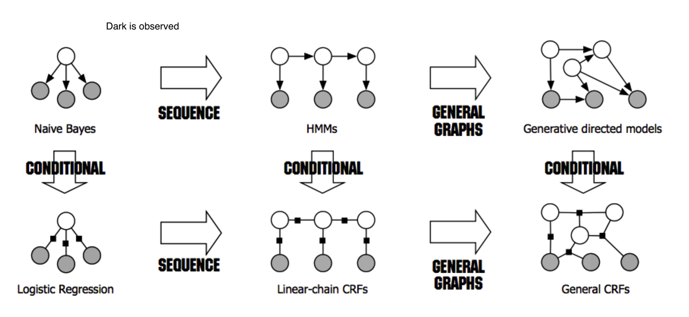
- dark is observed for HMMs, for other things unclear what it means
bayesian networks - R & N 14.1-5 + J 2
- examples
- causal model: causes $\to$ symptoms
- diagnostic model: symptoms $\to$ causes
- generally requires more dependencies
- learning
- expert-designed
- data-driven
- properties
- each node is random variable
- weights as tables of conditional probabilities for all possibilities
- represented by directed acyclic graph
- joint distr: $P(X_1 = x_1,…X_n=x_n)=\prod_{i=1}^n P[X_i = x_i \vert Parents(X_i)]$
- markov condition: given parents, node is conditionally independent of its non-descendants
- marginally, they can still be dependent (e.g. explaining away)
- given its markov blanket (parents, children, and children’s parents), a node is independent of all other nodes
- markov condition: given parents, node is conditionally independent of its non-descendants
-
BN has no redundancy $\implies$ no chance for inconsistency
- forming a BN: keep adding nodes, and only previous nodes are allowed to be parents of new nodes
hybrid BN (both continuous & discrete vars)
- for continuous variables can sometimes discretize
- linear Gaussian - for continuous children
- parents all discrete $\implies$ conditional Gaussian - multivariate Gaussian given assignment to discrete variables
- parents all continuous $\implies$ multivariate Gaussian over all the variables, and a multivariate posterior distribution (given any evidence)
- parents some discrete, some continuous
- h is continuous, s is discrete; a, b, $\sigma$ all change when s changes
-
$P(c h,s) = N(a \cdot h + b, \sigma^2)$, so mean is linear function of h - discrete children (continuous parents) 1. probit distr - $P(buys|Cost=c) = \phi[(\mu - c)/\sigma]$ - integral of standard normal distr
- like a soft threshold 2. logit distr. - $P(buys|Cost=c) =s\left(\frac{-2 (\mu - c)}\sigma \right)$
- logistic function (sigmoid s) produces thresh
exact inference
- given assignment to evidence variables E, find probs of query variables X
- other variables are hidden variables H 1. enumeration - just try summing over all hidden variables
-
$P(X e) = \alpha P(X, e) = \alpha \sum_h P(X, e, h)$ - $\alpha$ can be calculated as $1 / \sum_x P(x, e)$
- $O(n \cdot 2^n)$
- one summation for each of n variables
- ENUMERATION-ASK evaluates in depth-first order: $O(2^n)$
- we removed the factor of n
- variable elimination - dynamic programming (see elimination)
- we removed the factor of n

-
$P(B j, m) = \alpha \underbrace{P(B)}{f_1(B)} \sum_e \underbrace{P(e)}{f_2(E)} \sum_a \underbrace{P(a B,e)}_{f_3(A, B, E)} \underbrace{P(j a)}_{f_4(A)} \underbrace{P(m a)}_{f_5(A)}$ - calculate factors in reverse order (bottom-up)
-
each factor is a vector with num entries = $\prod$ num_elements * num_values - when we multiply them, pointwise products
- ordering
- any ordering works, some are more efficient
- every variable that is not an ancestor of a query variable or evidence variable is irrelevant to the query
- complexity depends on largest factor formed
- clustering algorithms = join tree algorithms (see propagation factor graphs)
- join individual nodes in such a way that resulting network is a polytree
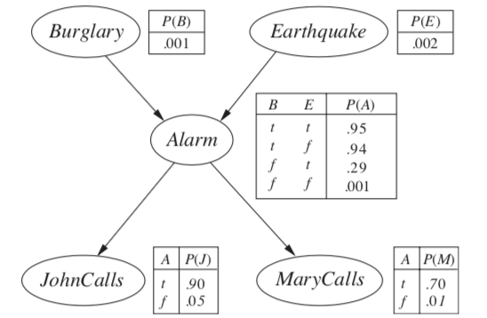
- polytree=singly-connected network - only 1 undirected paths between any 2 nodes
- time and space complexity of exact inference is linear in the size of the network
- holds even if the number of parents of each node is bounded by a constant
- can compute posterior probabilities in $O(n)$
- however, conditional probability tables may still be exponentially large
approximate inferences in BNs
- randomized sampling algorithms = monte carlo algorithms
- direct sampling methods:
- simplest - sample network in topological order
- rejection sampling - sample in order and stop once evidence is violated
-
want P(D A) - sample N times, throw out samples where A is false
- return probability of D being true
- this is slow
-
- likelihood weighting - fix evidence to be more efficient
- generating a sample
- fix our evidence variables to their observed values, then simulate the network
- can’t just fix variables - distr. might be inconsistent
- calculate W = prob of sample being generated
- when we get to an evidence variable, multiply by prob it appears given its parents
- for each observation
- if positive, Count = Count + W
- Total = Total + W
- return Count/Total
- this way we don’t have to throw out wrong samples
- doesn’t solve all problems - evidence only influences the choice of downstream variables
- generating a sample
- Markov chain monte carlo - ex. Gibbs sampling, Metropolis-Hastings
- fix evidence variables
- sample a nonevidence variable $X_i$ conditioned on the current values of its Markov blanket
- repeatedly resample one-at-a-time in arbitrary order
- why it works
- the sampling process settles into a dynamic equilibrium where time spent in each state is proportional to its posterior probability
- provided transition matrix q is ergodic - every state is reachable and there are no periodic cycles - only 1 steady-state soln
- 2 steps
- create markov chain with write stationary distr.
- draw samples by simulating the chain
- methods
- 0th order methods - query density
- metropolized random walk
- ball walk
- hit-and-run algorithm
- 1st order methods - uses gradient of the density
- Gibbs: we have conditionals
- metropolis adjusted langevin algorithm (MALA) = langevin monte carlo
- use gradient to propose new states
- accept / reject using metropolis-hastings algorithm
- unadjusted langevin algorithm (ULA)
- hamiltonian monte carlo (neal, 2011) - log-concave distr. density (analog of convexity)
- $\pi(x) = \frac{e^{-f(x)}}{\int e^{-f(y)}dy}$
- examples: normal distr., exponential distr., Laplace distr.
- variational inference - formulate inference as optimization
- good intro paper
- minimize KL-divergence between observed samples and assumed distribution
- the actual KL is hard to minimize so instead we maximize the ELBO, which is equivalent
- do this over a class of possible distrs.
- variational inference tends to be faster, but may not be as good as MCMC
conditional independence properties
-
multiple, competing explanations (“explaining-away”)
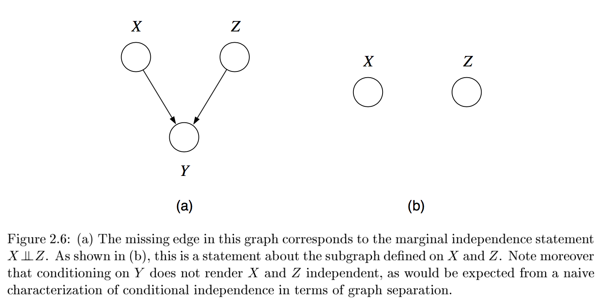
- in fact any descendant of the base of the v suffices for explaining away
-
d-separation = directed separation
-
Bayes ball algorithm - is $( X_A \perp X_B ) X_C$? - initialize
- shade $X_C$
- place ball at each of $X_A$
- if any ball reaches $X_B$, then not conditionally independent
- rules
- balls can’t pass through shaded unless shaded is at base of v
- balls pass through unshaded unless unshaded is at base of v
- initialize
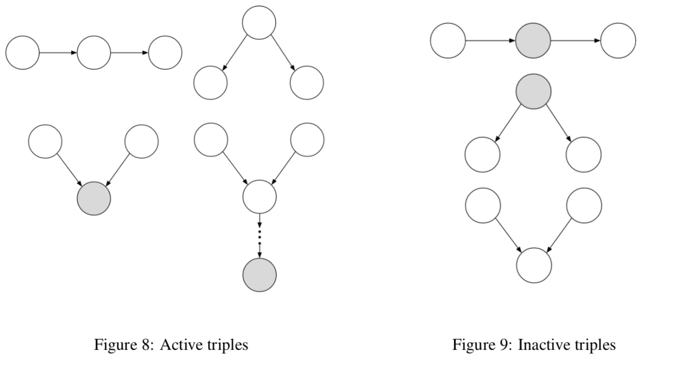
undirected
-
$X_A \perp X_C X_B$ if the set of nodes $X_B$ separates the nodes $X_A$ from $X_C$ 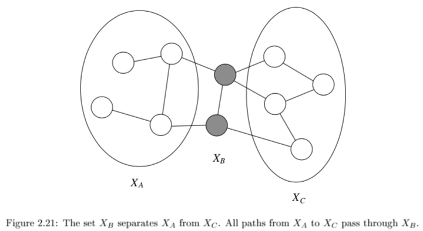
- can’t convert directed / undirected
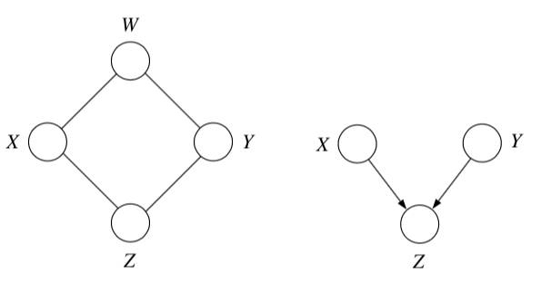
- factor over maximal cliques (largest sets of fully connected nodes)
- potential function $\psi_{X_C} (x_C)$ function on possible realizations $x_C$ of the maximal clique $X_C$
- non-negative, but not a probability (specifying conditional probs. doesn’t work)
- commonly let these be exponential: $\psi_{X_C} (x_C) = \exp(-f_C(x_C))$
- yields energy $f(x) = \sum_C f_C(x_C)$
- yields Boltzmann distribution: $p(x) = \frac{1}{Z} \exp (-f(x))$
- $p(x) = \frac{1}{Z} \prod_{C \in Cliques} \psi_{X_C}(x_c)$
- $Z = \sum_x \prod_{C \in Cliques} \psi_{X_C} (x_C)$
- reduced parameterizations - impose constraints on probability distributions (e.g. Gaussian)
- if x is dependent on all its neighbors
- Ising model - if x is binary
- Potts model - x is multiclass
elimination - J 3
- the elimination algorithm is for probabilistic inference
-
want $p(x_F x_E)$ where E and F are disjoint - any var that is not ancestor of evidence or ancestor of query is irrelevant
-
- here, let $X_F$ be a single node
- notation
- define $m_i (x_{S_i})$ = $\sum_{x_i}$ where $x_{S_i}$ are the variables, other than $x_i$, that appear in the summand
- define evidence potential $\delta(x_i, \bar{x_i})$ is defined as $x_i == \bar{x_i}$
- then \(g(\bar{x_i}) = \sum_{x_i} \delta (x_i, \bar{x_i})\)
- for a set $\delta (x_E, \bar{x_E}) = \prod_{i \in E} \delta (x_i, \bar{x_i})$
- lets us define $p(x, \bar{x}_E) = p^E(x) = p(x) \delta (x_E, \bar{x_E})$
- undirected graphs
- $\psi_i^E(x_i) \triangleq \psi_i(x_i) \delta(x_i, \bar{x}_i)$
- this lets us write $p^E (x) = \frac{1}{Z} \prod_{c\in C} \psi^E_{X_c} (x_c)$
- can ignore z since this is unnormalized anyway
- to find conditional probability, divide by all sum of $p^E(x)$ for all values of E
- in actuality don’t compute the product, just take the correct slice
- eliminate algorithm
- initialize: choose an ordering with query last
- evidence: set evidence vars to their values
- update: loop over element $x_i$ in ordering
- let $\phi_i(x_{T_i})$ be product of all potentials involving $x_i$
- sum over the product of these potentials $m_i(x_{S_i}) = \sum_x \phi_i(x_{T_i})$
-
normalize: $p(x_F \bar{x}E) = \phi_F(x_F) / \sum{x_F} \phi_F (x_F)$
- undirected graph elimination algorithm
- for directed graph, first moralize
- for each node connect its parents
- drop edges orientation
- for each node X
- connect all remaining neighbors of X
- remove X from graph
- for directed graph, first moralize
- reconstituted graph - same nodes, includes all edges that were added
- elimination cliques - includes X and its neighbors when X is removed
- computational complexity is the exponential in the number of variables in the elimination clique
- involves treewidth - one less than smallest achievable value of cardinality of largest elimination clique
- range over all possible elimination orderings
- NP-hard to find elimination ordering that achieves the treewidth
propagation factor graphs - J 4
- tree - undirected graph in which there is exactly one path between any pair of nodes
- if directed, then moralized graph should be a tree
- polytree - directed graph that reduces to an undirected tree if we convert each directed edge to an undirected edge
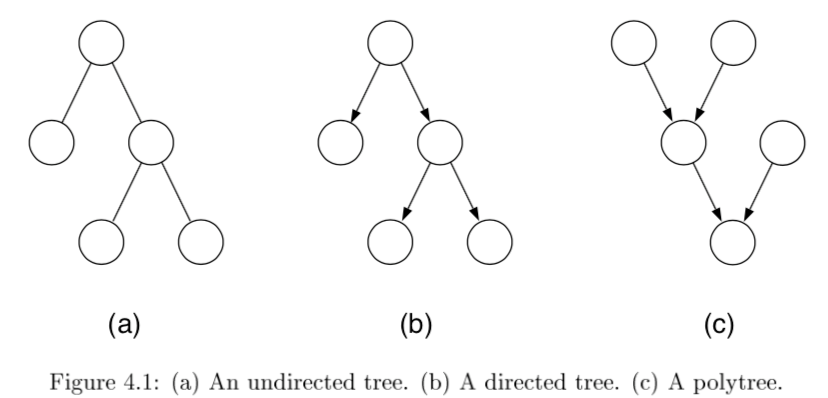
-
\[p(x) = \frac{1}{Z} \left[ \prod_{i \in V} \psi (x_i) \prod_{(i,j)\in E} \psi (x_i,x_j) \right]\]
- for directed, root has individual prob and others are conditionals
- can once again use evidence potentials for conditioning
probabilistic inference on trees
- eliminate algorithm through message-passing
- ordering I should be depth-first traversal of tree with f as root and all edges pointing away
- message $m_{ji}(x_i)$ from $j$ to $i$ =intermediate factor
- ordering I should be depth-first traversal of tree with f as root and all edges pointing away
-
2 key equations
- $m_{ji}(x_i) = \sum_{x_j} \left( \psi^E (x_j) \psi (x_i, x_j) \prod_{k \in N(j) \backslash i} m_{kj} (x_j) \right)$
-
$p(x_f \bar{x}E) \propto \psi^E (x_f) \prod{e \in N(f)} m_{ef} (x_f) $ 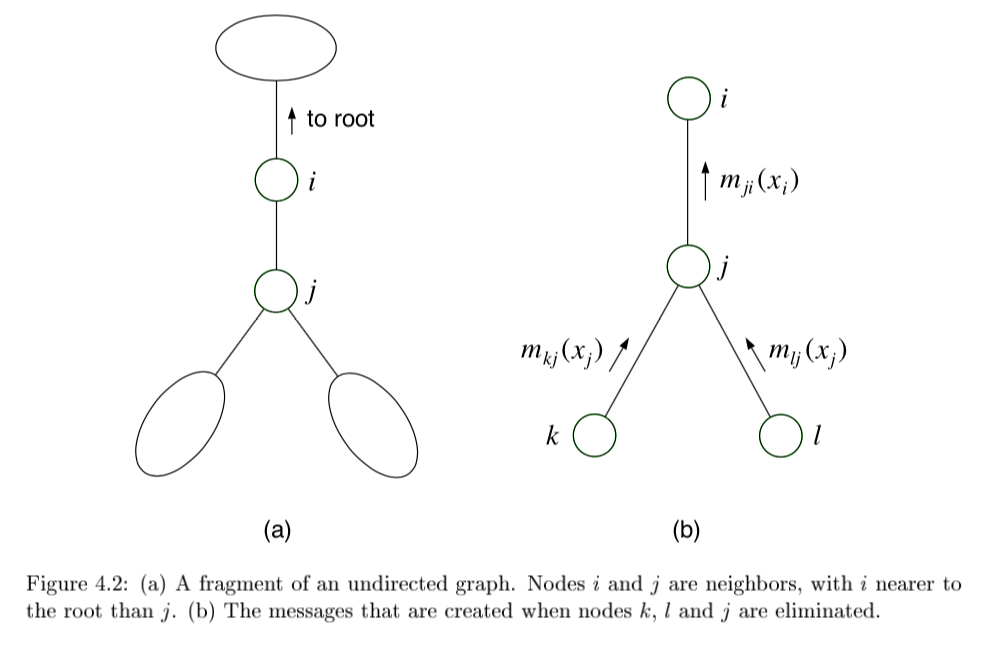
- sum-product = belief propagation - inference algorithm
-
computes all single-node marginals (for certain classes of graphs) rather than only a single marginal
-
only works in trees or tree-like graphs
-
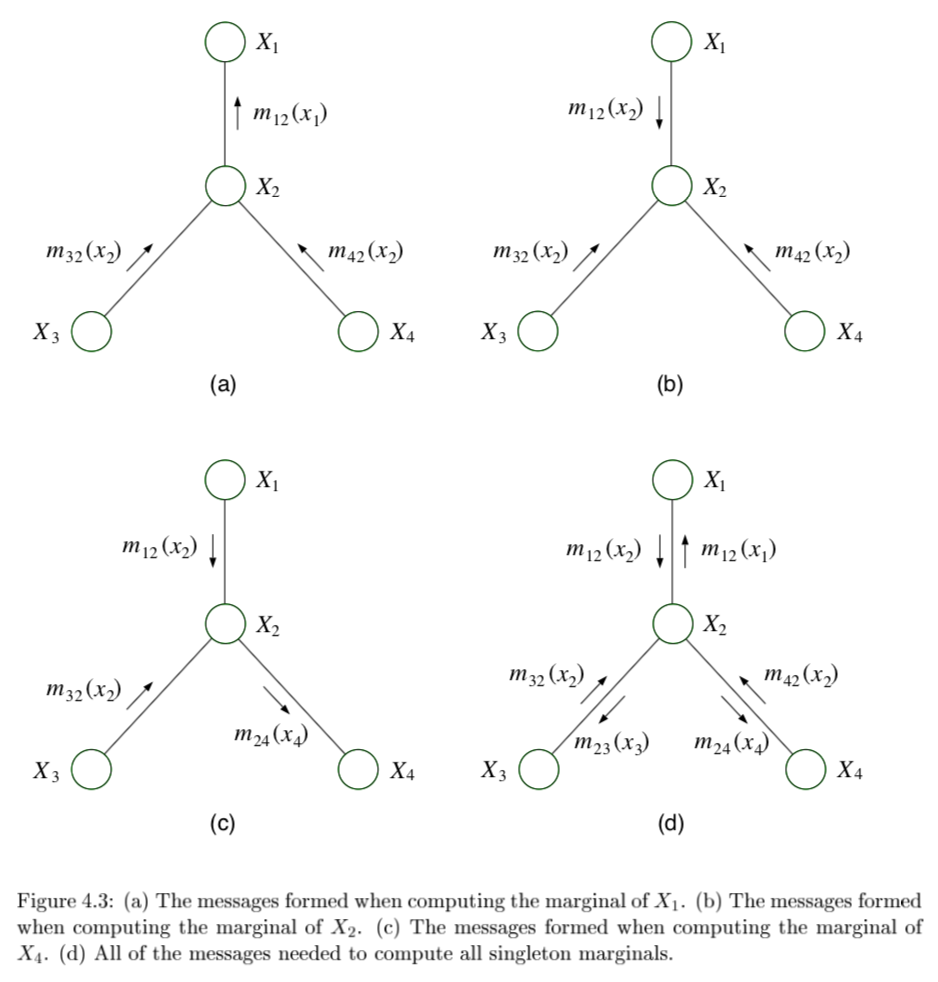
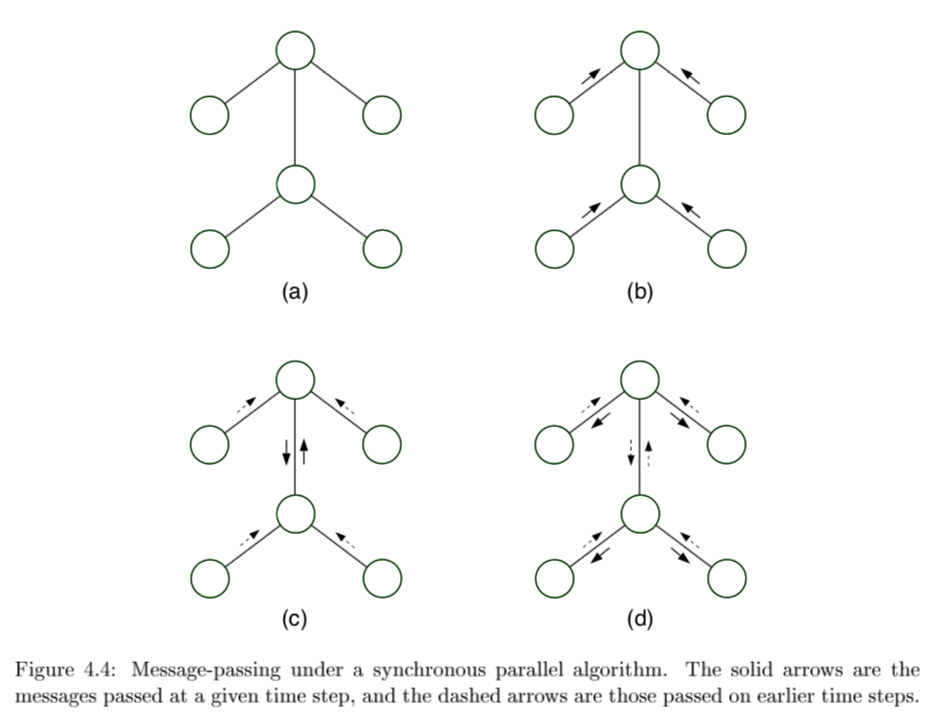
-
message-passing protocol - a node can send a message to a neighboring node when, and only when, it has received messages from all of its other neighbors (parallel algorithm)
- evidence(E)
- choose root
- collect: send messages evidence to root
- distribute: send messages root back out
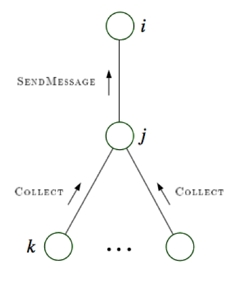
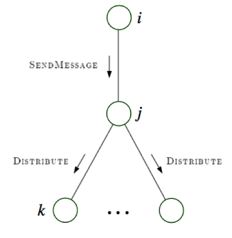
-
factor graphs
- factor graphs capture factorizations, not conditional independence statements
- ex $\psi (x_1, x_2, x_3) = f_a(x_1,x_2) f_b(x_2,x_3) f_c (x_1,x_3)$ factors but has no conditional independence
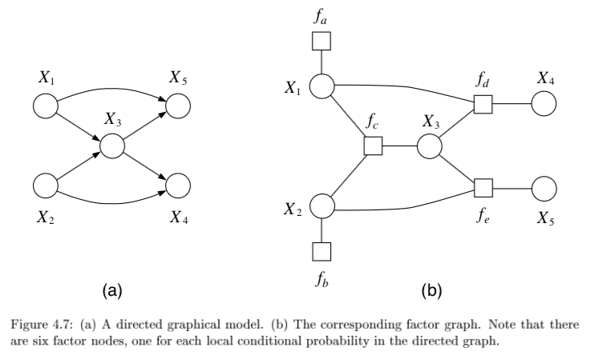
- \[f(x_1,...,x_n) = \prod_s f_s (x_{C_s})\]
- neighborhood N(s) for a factor index s is all the variables the factor references
- neighborhood N(i) for a node i is set of factors that reference $x_i$
- provide more fine-grained representation of prob. distr.
- could add more nodes to normal graphical model to do this
- ex $\psi (x_1, x_2, x_3) = f_a(x_1,x_2) f_b(x_2,x_3) f_c (x_1,x_3)$ factors but has no conditional independence
- factor tree - if factors are made nodes, resulting undirected graph is tree
- two kinds of messages (variable-> factor & factor-> variable)
- run all the factor $\to$ variables first
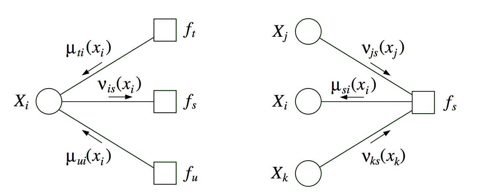
- \[p(x_i) \propto \prod_{s \in N(i)} \mu_{si} (x_i)\]
- if a graph is originally a tree, there is little to be gained from factor graph framework
- sometimes factor graph is factor tree, but original graph is not
maximum a posteriori (MAP)
-
want $\max_{x_F} p(x_F \bar{x}_E)$ - MAP-eliminate algorithm is very similar to before
- initialize - choose ordering
- evidence - set evidence
- update - for each take max over variable and make new factor
- maximum - marginalize
- products of probs tend to underflow, so take $\max_x \log p^E (x)$
- can also derive a max-product algorithm for trees
- find $\text{argmax}_x p^E (x)$
- can solve by keeping track of maximizing values of variables in max-product algorithm
dynamic bayesian nets
- dynamic bayesian nets - represents a temporal prob. model
state space model
-
state space model
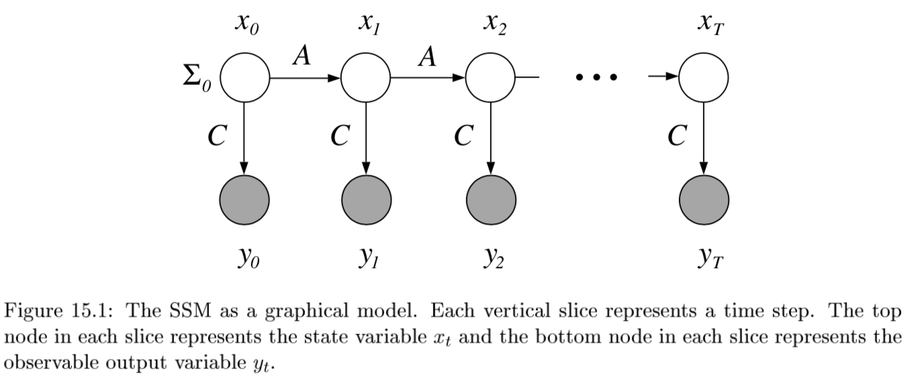
-
$P(X_{0:t}, E_{1:t}) = P(X_0) \prod_{i} \underbrace{P(X_i X_{i-1}) }_{\text{transition model}} : \underbrace{P(E_i X_i)}_{\text{sensor model}}$ -
agent maintains belief state of state variables $X_t$ given evidence variables $E_t$
-
improve accuracy
- increase order of Markov transition model
- increase set of state variables (can be equivalent to 1)
- hard to maintain state variables over time, want more sensors
-
-
4 inference problems (here $\cdot$ is elementwise multiplication)
-
filtering = state estimation - compute $P(X_t e_{1:t})$ - recursive estimation: $$\underbrace{P(X_{t+1} e_{1:t+1})}{\text{new state}} = \alpha : \underbrace{P(e{t+1} X_{t+1})}{\text{sensor}} \cdot \underset{x_t}{\sum} : \underbrace{P(X{t+1} x_t)}_{\text{transition}} \cdot \underbrace{P(x_t e_{1:t})}_{\text{old state}}$$ where $\alpha$ normalizes probs -
prediction - compute $P(X_{t+k} e_{1:t})$ for $k>0$
-
-
$\underbrace{P(X_{t+k+1} e_{1:t})}{\text{new state}} = \sum{x_{t+k}} \underbrace{P(X_{t+k+1} x_{t+k})}{\text{transition}} \cdot \underbrace{P(x{t+k} e_{1:t})}_{\text{old state}}$
-
smoothing - compute $P(X_{k} e_{1:t})$ for $0 < k < t$ -
2 components $P(X_k e_{1:t}) = \alpha \underbrace{P(X_k e_{1:k})}{\text{forward}} \cdot \underbrace{P(e{k+1:t} X_k)}_{\text{backward}}$ - forward pass: filtering from $1:t$ 2. backward pass from $t:1$ $\underbrace{P(e_{k+1:t}|X_k)}{\text{sensor past k}} = \sum{x_{k+1}} \underbrace{P(e_{k+1}|x_{k+1})}{\text{sensor}} \cdot \underbrace{P(e{k+2:t}|x_{k+1})}{\text{recursive call}} \cdot \underbrace{P(x{k+1}|X_k)}_{\text{transition}}$ 3. this is called the forward-backward algo(also there is a separate algorithm that doesn’t use the observations on the backward pass)
-
-
most likely explanation - $\underset{x_{1:t}}{\text{argmax}}:P(x_{1:t} e_{1:t})$ -
Viterbi algorithm: $\underbrace{\underset{x_{1:t}}{\text{max}} : P(x_{1:t}, X_{t+1} e_{1:t+1})}{\text{mle x}} = \alpha : \underbrace{P(e{t+1} X_{t+1})}{\text{sensor}} \cdot \underset{x_t}{\text{max}} \left[ : \underbrace{P(X{t+1} x_t)}{\text{transition}} \cdot \underbrace{\underset{x{1:t-1}}{\text{max}} :P(x_{1:t-1}, x_{t+1} e_{1:t})}_{\text{max prev state}} \right]$ - complexity
- K = number of states
- M = number of observations
- n = length of sequence
- memory - $nK$
- runtime - $O(nK^2)$
-
-
learning - form of EM
- basically just count (maximizing joint likelihood of input and output)
- initial state probs $\frac{count(start \to s)}{n}$
-
$P(x’ x) = \frac{count(s \to s’)}{count(s)}$ -
$P(y x) = \frac{count (x \to y)}{count(x)}$
hmm
- state is a single discrete process
- transitions are all matrices (and no zeros in sensor model)$\implies$ forward pass is invertible so can use constant space
- online smoothing (with lag)
- ex. robot localization
kalman filtering
- state is continuous
- ex.
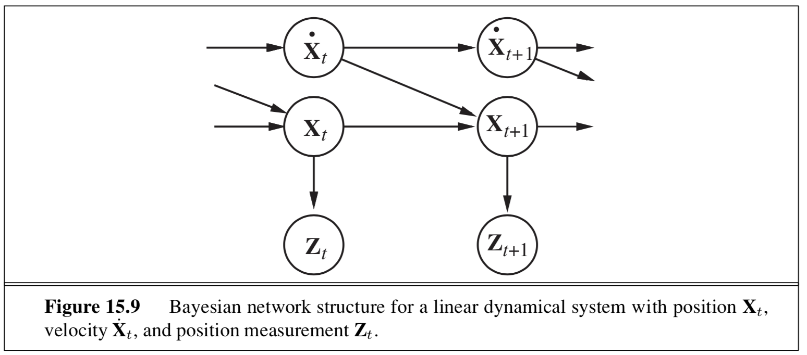
- type of nodes (real-valued vectors) and prob model (linear-Gaussian) changes from HMM
- 1d example: random walk
-
state nodes: $x_{t+1} = Ax_t + Gw_t$
- output nodes: $y_t = Cx_t+v_t$
- x is linear Gaussian
- w is noise Gaussian
- y is linear Gaussian
- doing the integral for prediction involves completing the square
- properties
- new mean is weighted mean of new observation and old mean
- update rule for variance is independent of the observation
- variance converges quickly to fixed value that depends only on $\sigma^2_x, \sigma^2_z$
- Lyapunov eqn: evolution of variance of states
- information filter - mathematically the same but different parameterization
- extended Kalman filter
- works on nonlinear systems
- locally linear
- switching Kalman filter - multiple Kalman filters run in parallel and weighted sum of predictions is used
- ex. one for straight flight, one for sharp left turns, one for sharp right turns
- equivalent to adding discrete “maneuver” state variable
general dbns
- can be better to decompose state variable into multiple vars
- reduces size of transition matrix
- transient failure model - allows probability of sensor giving wrong value
- persistent failure model - additional variable describing status of battery meter
- exact inference - våariable elimination mimics recursive filtering
- still difficult
- approximate inference - modification of likelihood weighting
- use samples as approximate representation of current state distr.
- particle filtering - focus set of samples on high-prob regions of the state space
- consistent
- sample a state
- sample the next state given the previous state
-
weight each sample by $P(e_t x_t)$ - resample based on weight
structure learning
- conditional correlation - inverse covariance matrix = precision matrix
- estimates only good when $n » p$
- eigenvalues are not well-approximated
- often enforce sparsity
- ex. threshold each value in the cov matrix (set to 0 unless greater than thresh) - this threshold can depend on different things
- can also use regularization to enforce sparsity
- POET doesn’t assume sparsity